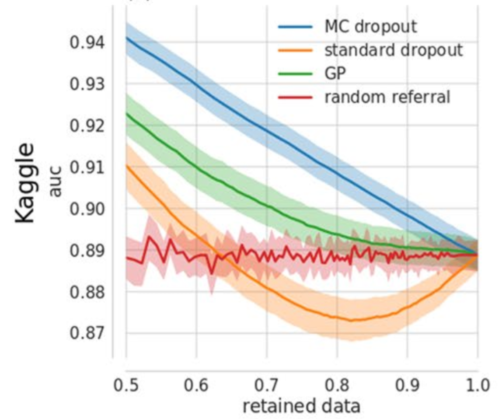

As a biostatistician in the deep learning world I have the awkward task of balancing the dogma of statistics (everything is uncertain) along with the alluring success of some of the newest crazy complex neural network architectures. Going onto any Kaggle competition or new paper Such as the popular but arguably flawed paper on diagnosing from radiological screens from Andrew Ng et al. you will see models with millions of parameters performing seemingly magical tasks on data of all kinds.
These models however, almost never report uncertainty in their predictions. Why would they? Besides the fact that in the “just predict as many correct as possible” world of Kaggle uncertainty doesn’t win you money, turning their model into a Bayesian one by putting priors on their weights takes the already computationally intensive task of training a neural net and makes it even more burdensome.
The paper Leveraging uncertainty information from deep neural networks for disease detection does two very powerful things. First it shows that a recent method of getting uncertainty in neural networks by exploiting the regularization technique of dropout works well in the context of complex disease diagnosis models, and second it shows the value of this uncertainty knowledge in a biomedical context in number of clever ways.
Context
If you understand dropout and have a basic understanding of the bayes by dropout concept, you can skip this and go straight to Main Point The new(ish) paper, Dropout as a Bayesian Approximation: Representing Model Uncertainty in Deep Learning, shows that you can approximate a Bayesian posterior in an arbitrary neural network by training with dropout, and then leaving that dropout on at test time.
Dropout
Neural networks trained with dropout will randomly drop connections in a neural network at training time with probability \(\alpha\) in an effort to force the model to learn robust prediction pathways (i.e. never learning to rely on a single feature that could make its predictions fragile). Traditionally after the model is trained, all the connections are left in the model but the weights are multiplied by (\(1 - \alpha\)) to account for the fact that the model had less connections when the weights were learned. This technique has proven extremely good at fighting overfitting.
Getting a posterior from dropout
The bayes-by-dropout paper points out that if you simply leave the dropout on at test time and sample a ton of predictions from your model, The original paper explains this in much better words and also shows that, while this relationship is intuitively appealing, it really is mathematically true. It’s great work. you are effectively sampling from a distribution of different models. Thus the results from that sampling reflect an approximate posterior of your model’s predictions.
Example output of 100 passes through a convolutional network trained to recognize MNIST digits. You can see the model’s uncertainty by the scatter of a given classification over the passes. Taken from the bayes-by-droput paper.
This is great because it lowers the boundary to Bayesian neural networks by an immense amount. You don’t need to break out a fancy probabilistic programming language and setup all your priors, you can simply train with dropout and leave it on. In addition, you can leverage the substantial prior information stored in previously trained models via transfer learning.
Main Point
By using (approximately) Bayesian methods to ascertain prediction uncertainty in deep neural networks (but really any model) we can more intelligently decide when to trust the prediction or to send the observation to a more definitive look. In the context of biomedical applications this means we can know when to trust the model and when to get a doctor to look at the data manually.
Side Points
The paper also dives in bit into the use of Bayesian uncertainty to try and diagnose data from an unobserved input distribution of output class. It comes to the conclusion that the Bayesian approach can not separate the causes of uncertainty and thus it doesn’t work well for this task. They do, however, show that you can fit an autoencoder on top of the trained layers and do decently well. This is interesting but not what I consider the main or most impactful parts of the paper.
What they did
Took standard convolutional architectures for image prediction and trained them with dropout to predict the presence of the disease Diabetic Retinopathy. At testing time they kept the dropout on and assembled a monte-carlo approximation of the posterior of the predictions.
Demonstration of how Diabetic Retinopahy manifests itself in an individuals eye. Figure taken from Dr. Winston J. Scott’s website.
The mean of this posterior was used as the final prediction value (p(disease|image) ) and the width of the distribution was used as a measure of how uncertain the model is about its prediction.
Why can’t we just use the probability as a measure of uncertainty?
There is a tricky and subtle difference between prediction uncertainty and model uncertainty. Prediction uncertainty (or simply the output probability of a class) says: “assuming I am a correct model (I have determined the correct separating hyperplane for these data) , this is the probability that the observation is a given class”, where as model uncertainty says: “I recognize that my separating hyperplane is not exact, and taking that into account, this is how confident I am in my predicted probability.”
If you make the assumption that the data is truly Bernoulli after being conditioned on the inputs, you can calculate the variance of the prediction by doing the classic \((1-p)*p\) variance estimate, but the paper shows that this is too simplistic and under performs the dropout uncertainty measurement in all scenarios. And even a random baseline! See figure 4.
How did they test their models?
At first glance it seems hard to actually compare the traditional no-uncertainty models and the Bayesian models as they are fundamentally different. The paper does a rather smart thing to deal with this and simulates how they envision the models being used in real life.
First they run predictions from the Bayesian model and the standard model on the entire test set, they then discard (or let an expert review) the predictions that the model was the most uncertain about. This discarding was done in multiple ways:
- They set a boundary for uncertainty (any prediction that had an associated uncertainty above was discarded), they then computed model performance measures (AUC etc) on the retained data.
- They set a boundary on the amount of observations retained: i.e. only the top % of the predictions are kept. This allowed them to compare their model to a standard model (using the aforementioned Bernoulli variance as a stand in for uncertainty) and also by just randomly discarding %.
What relationships did they find?
Using the first uncertainty cutoff boundary they saw that, as they made their threshold more picky, the model performance monotonically increased. This shows that the model was correctly labeling the observations that it was getting wrong as uncertain more often than not. They showed this as well by simply looking at the distributions of uncertainty for the correctly classified observations and the incorrectly classified ones, with the incorrectly classified ones having a higher average uncertainty.

Results of sliding the level of uncertainty tollerated for a prediction by the model (a) and sliding the proportion of the predictions that are not predicted (compared to a random baseline) (b).
Their second test setup, where they compared the standard model with no dropout at test time to the model with dropout at test time they saw that the dropout uncertainty always outperformed the random discarding of cases, where as the Bernoulli-based uncertainty actually performed worse than the random subset approach for a large range of the thresholds.
 Showing the effect of sliding the proportion of data predictions are performed on on the AUC of different models. Shows that the bayes by dropout approach is always better than the random baseline, and even is better than a deep gaussian process approach. Surprisingly the nieve uncertainty approach (‘standard dropout’) is often worse than random.
What implications does this have?
This paper shows that, using the recently published finding that dropout can be used to approximate a posterior, it is incredibly simple to turn a deep neural network (of any architecture) trained on complex medical data into one that can be used to not only predict diseases but also say when you should not rely on the model and seek other input for diagnosis.
Purely as a real-world demo that the idea that bayes as dropout works this paper is great, but the combination of well throughout experiments demonstrating the value of uncertainty in neural network prediction and demonstrating the power of bayes-by-dropout compared to other options for uncertainty, it becomes excellent.
My hesitations
Data Balance
It was not clear from the paper if they properly accounted for the unbalance of the data. The data is split 70-30 between no-disease and disease. They properly use AUC for their performance measure but they also make statements about the distribution of certainty in their model over the true status of the observation. Some of these seem to be a result of simply the fact that there are many more no-disease examples than disease ones. For instance taking a look at the following figure where they look at the two-dimensional density of model prediction to uncertainty to predictions they got correct vs those they got incorrect…
We see a large blob of density in the bottom left corner. This seems to be to be a simple fact that there were many more non-diseased cases than diseased cases. I think the figure would be more informative if they used a balanced test set. If anything I think it would make their point stronger, but I think it would help elucidate if the model was just relying on the distribution of the training data to be a good predictor.
Repurposing a softmax model
They are collapsing an ordinal outcome (disease severity) into a binary disease not-disease indicator. For one of their models they took a high-performing kaggle model and simply summed the softmax outputs for the disease-corresponding classes to get their probability of disease.
The publicly available network architecture and weights provided by the participant who scored very well in the Kaggle DR competition, which we will call JFnet…We recast the original model’s five output units (trained for Kaggle DR’s level discrimination task) to our binary tasks by summing the output of respective units.
This makes me uneasy as the model was trained to minimize the categorical cross entropy, but then they treat it like it was trained to minimize binary cross entropy. It feels like there may be some unexplored side effects of the model dedicating more of its training to optimizing the parts corresponding to disease classification than to non-disease classification.
Also, they are dichotomizing, and what is the name of this blog?